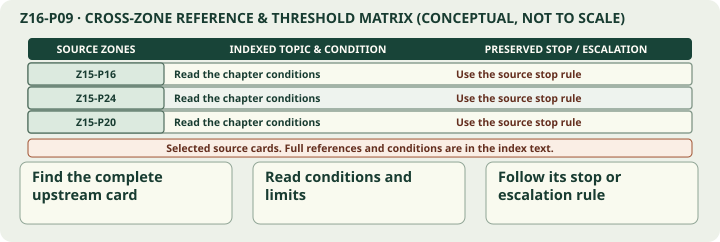

Z16-P09 · Field reference atlas · New manuscript
Severe Weather Immediate Action: Tornado, Flood and Lightning Index
Locate the original encyclopedia cards for severe Weather Immediate Action: Tornado, Flood and Lightning Index.
When it applies · Offline reference lookup. The linked chapter defines the situation, audience and limits.
Equipment · Offline reader or the complete linked source cards in print.

Actions
- Open Z15-P16 for move immediately to lowest interior tornado shelter on Tornado Warnings; Z15-P24 for obey Turn Around Don't Drown: 6-inch walking and 12-inch vehicle flood physics.[A10, D03, D05]
- Open Z15-P20 for enforce indoor and outdoor lightning safety plus the 30-minute rule; Z10-P54 for recognize ongoing lightning hazards and coordinate emergency care.[A10, E07, M28]
- Read the linked card’s applicability, equipment and stop conditions together. Keep review and source limitations attached to any excerpt.[A10, ED]
Failure recognition · Acting on a keyword or title while overlooking an upstream exception or stop condition.[A10, ED]
Verify · Confirm the exact page ID and read the full conditions before using the reference.[A10, ED]
Stop or change course · Use the protective action for the current warning. Stay out of floodwater and avoid low ground threatened by flooding.[A10, D05, T16, D03]
Evidence and editorial notes
- A10 · FEMA / Ready.gov · Make a Plan (current web edition)
- Section: Offline reader navigation, historical lineage, and HOLD transparency · Conditions: Using the complete 16-zone offline archive, zone readers, and print proofs
Support: Navigation aids expose draft status, reconstruction lineage, open diagnostic photo needs, and pending specialist holds on every lookup path.
Limitations: This index entry does not independently establish any safety, regulatory or diagnostic instruction. · Conflicting evidence: None noted.
Editorial note: Index design and cross-reference policy. Substantive directions come from linked upstream chapter claims. · Specialist reviewer: Accessibility, print QA, and editorial reviewer
Primary source · checked 2026-11-24 - D03 · National Weather Service · Tornado Safety: During a Tornado (Current web edition)
- Section: During a Tornado: at home, outside or in a vehicle · Conditions: Tornado warning; options depend on location and flood danger
Support: Use a sturdy building’s lowest suitable interior area when possible. Mobile homes and overpasses are unsafe. Follow the vehicle or outdoor last-resort branch if sturdy shelter cannot be reached.
Limitations: A low outside spot is conditional on safe access and absence of flood danger. Follow local alerts. · Conflicting evidence: See A02 claim audit for boundaries.
Editorial note: Core tornado shelter-selection and post-storm hazard evidence in Z15. · Specialist reviewer: Meteorology and emergency management
Primary source · checked 2026-11-25 - D05 · FEMA / Ready.gov · Floods (current web edition)
- Section: Floods: During; Turn Around, Don’t Drown · Conditions: Flooded roads or trails, flood alert, or post-flood re-entry
Support: Move to safe higher ground when directed, never walk or drive into floodwater, and respect closures and re-entry restrictions.
Limitations: Depth examples are warning illustrations, never safe entry thresholds. Trapped or submerged vehicles require emergency help and scene-specific response. · Conflicting evidence: See A02 claim audit for boundaries.
Editorial note: Core flood evacuation, water-avoidance, and safe re-entry evidence. · Specialist reviewer: Emergency management and flood hydrology
Primary source · checked 2026-11-24 - E07 · NWS · Lightning Tips (current web edition)
- Section: If you hear thunder; when it is safe to return · Conditions: Thunderstorm and reachable substantial building or enclosed hard-topped vehicle
Support: Move to proper shelter at thunder. Wait 30 minutes after last thunder before resuming outdoor activity.
Limitations: Fabric tents, open pavilions, and trees are not lightning-safe shelters. · Conflicting evidence: None; 30-minute rule is standard NWS guidance.
Editorial note: Separates weather cover from lightning protection in Z02. · Specialist reviewer: Weather safety and emergency management
Primary source · checked 2026-11-24 - M28 · CDC · Safety Guidelines: Lightning (2026)
- Section: First Aid Recommendations; call for help and assess the situation · Conditions: Lightning casualty with possible continuing storm exposure
Support: Victims retain no charge. Check ongoing danger, report number and status of casualties, call EMS and begin safe dispatcher-guided care.
Limitations: No lay permission to enter an active high-risk scene. Multi-casualty triage needs local protocols. · Conflicting evidence: See A02 claim audit for boundaries.
Editorial note: Added in A02 to separate a consequential source boundary. · Specialist reviewer: Wilderness medicine, EMS and meteorology
Primary source · checked 2026-11-25 - T16 · NWS · Flood Safety (current web edition)
- Section: Flood Watches and Warnings; Turn Around Don’t Drown · Conditions: U.S. flood alerts and routes crossing moving or standing floodwater
Support: Use the local flood alert wording and follow directions to move to safer higher ground. Never drive around a barricade or enter a flooded route.
Limitations: Stages, timing and detours depend on event and locality; no observable safe crossing depth. · Conflicting evidence: See A02 claim audit for boundaries.
Editorial note: Clarifies Watch vs Warning decision thresholds in Z01 scenarios. · Specialist reviewer: Emergency management and meteorology
Primary source · checked 2026-11-24
Source lineage · New manuscript (Z16 P20 emergency index) · Classification · New manuscript.